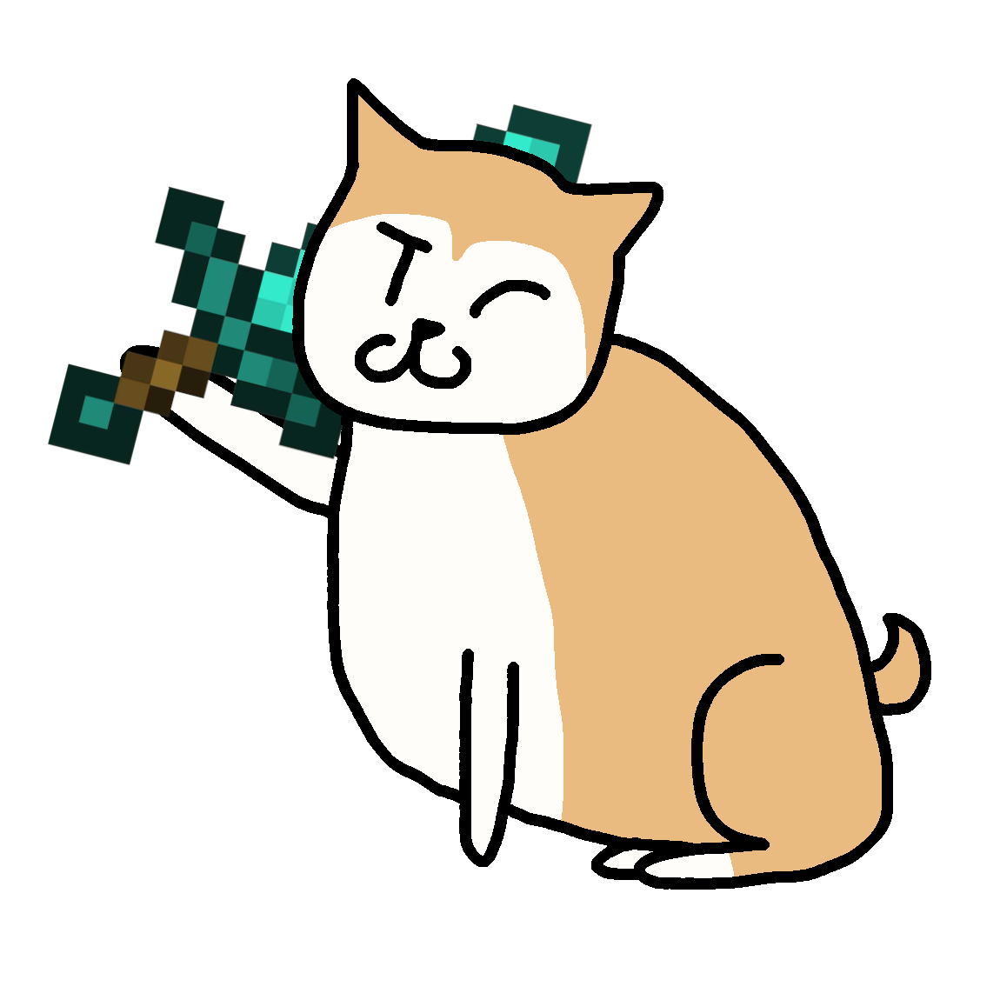

Taro Nakayama, known by everyone as just "Shibe", is a mildly overweight Shiba Inu from Kyoto, Japan. He's overall pretty chill and relaxed, and he doesn't take a lot of things seriously. His chaotic neutral alignment is because he tends to sorta just do as he pleases, despite any laws, though he does still have a moral compass, and will help fight for the greater good if he feels like his help is necessary, or if he's dragged into it forcefully. Also he's technically a (lower level) god, but barely anybody knows, and those who do just don't tell him that because they think it'll go to his head (no this isn't an excuse for me to make him OP or whatever) He currently lives in Diamond City, Metro Kingdom in this large crossover universe that I do not feel like explaining. Just imagine any series you can and there's a decent chance it's canon in some way. Friends: Doge, Isabelle, Micheal P, Yuki, Masaaki, Ashley and Red, Toilet Dee, Lego Gonk Droid, Chara, Sans, Dunsparce Foes: Karen, Flowey, Dark Shibe, Susie Haltmann